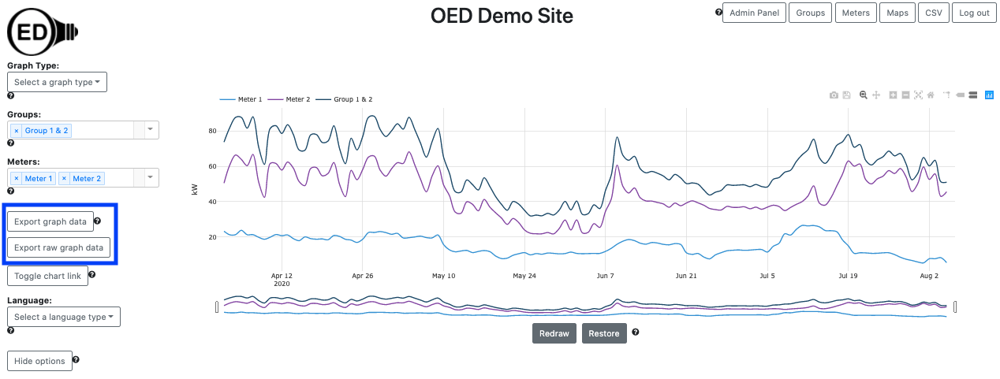

OED Documentation
Exporting Data
Version V0.7.0
The latest version of this page is V1.0.0.
Documentation overview
User documentation
Information
Meters/Groups
Other Features
Admin documentation
Documentation versions for this page
Overview
OED is an open system that believes that your site data belongs to you and should be readily available. The ability to export data is the feature that lets you get the data. You may want to do this to work on it outside OED or to transfer the data to another system. OED uses the vendor neutral CSV (Comma Separated Value) spreadsheet format for exported data.
Usage
Line graphics
One nice feature is that you get the data associated with the graphic you are displaying. This means you can select meters/groups, time ranges to plot, etc. and visualize them in OED before you export the data. Once the graphic contains the data you want, you can either click the "Export graph data" button or "Export raw graph data" button (both inside blue box in next figure which is for a user with admin privileges) to initiate the export. 
The "Export graph data" will give you the points on the OED graphic that is being displayed. The size of the exported file will not be large because you are getting the graphic points as described in the line graphic details. The "Export raw graph data" will give you the original (raw) meter data that was used to create the graphic. Since this is the raw meter data, group data on display in the graph are not included in the export of raw data.
The size of this CSV file scales with the number of meter points and can be large. To avoid accidental or inappropriate downloads of large files, OED does the following:
- If the file size is small (normally set to 5MB) then the file is automatically downloaded when the button is clicked. You do not need to be logged in to perform these exports.
- If the file size is medium (normally 5-25MB) then the user must have CSV download privileges. This means you must be logged in as a user with either CSV or admin rights. If you have CSV privileges then you will be told the expected file size and ask to verify you wish to download the file. If you have admin privileges then the file will automatically download.
- If the file size is large (normally more than 25MB) then the user must have admin privileges. You will be told the expected file size and ask to verify you wish to download the file.
Note that you will be told you cannot download the data if you don't have appropriate privileges. The download of the raw data as a CSV will take longer than the network transfer time because OED must get the data from the database and format into a CSV.
A CSV file will be placed where your downloaded web browser files go. It will be named "oedExport...." or "oedRawExport...." where the .... has the graphic type and date ranges involved. For example, the exported data for the graphic shown in the figure above had the name "oedExport_line_April_2_2020_12_00_00_AM_to_August_5_2020_12_00_00_AM.csv" and for the raw export it had the name "oedRawExport_line_April_1_2020_1_00_00_AM_to_August_6_2020_2_00_00_PM.csv". Note that the dates are slightly earlier and later in the name for the raw file. This is due to the fact that OED did some readings averaging on the line graph as described in the line graphic details. Also note that if different meters/groups have different ranges of dates then one of them will be used for the file name.
Bar graphics
Exporting bar graphics data is similar to line graphics except you only have the option to "Export graph data". You cannot export raw data since a bar graphic sums data over a range of time. The line graphic allows you to see the raw meter data if that is desired.
Details
You can export line and bar graphic data. You cannot export compare and map graphic data. There did not seem to be a need for compare and maps since compare has very limited data and maps are very much tied to the geographical location. Furthermore, the data shown on compare and maps is, in a general way, a subset of the bar graphic.
The time range is considered the full time shown on the line graphic (not just the zoomed in time) so you will see that unless you redraw to reduce the time range. (see redraw information)